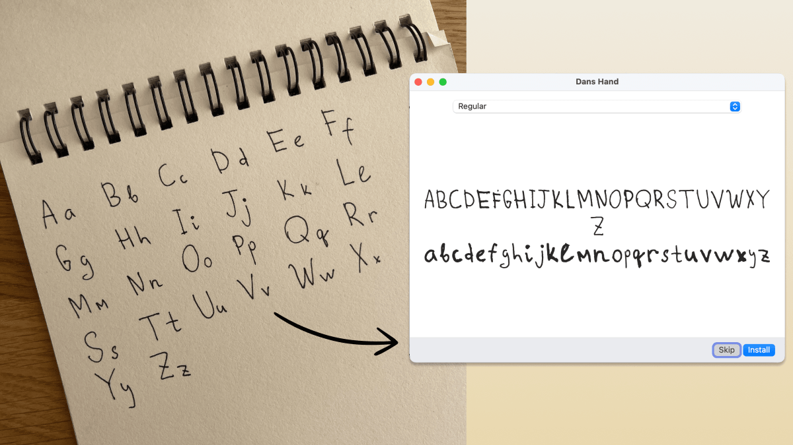

Your handwriting is a font now
Draw your alphabet on paper. Take a photo. Get a real TTF / WOFF2 font. Free, open source, runs on your machine. Nothing is uploaded, no credits, and the font is one hundred percent yours.
npx skills add danilo-znamerovszkij/draw-your-font
This headline is set in a font made by this tool, from the photo below.

A real one-shot result: dim light, spiral binding, page shadow. One photo in, installable font out.
How it works
Grab a dark pen and write your alphabet on paper. Any paper. A napkin counts. Letters just should not touch.
One phone photo from above. Shadows, angles and notebook spirals are handled. No scanner, no exact template.
Drag the photo into Claude Code and say it. The letters are found, labeled and built into a font, then quality-checked for you.
No AI needed either
The skill sits on a plain npm CLI with zero system dependencies. If you can tell it what you wrote, it does the whole job by itself:
# freeform photo, in the order you wrote: npx draw-your-font make photo.jpg --chars "ABCabc" --name "My Hand" # or print a guided template first: npx draw-your-font template -o template.pdf npx draw-your-font make page1.jpg page2.jpg --charset minimal
The fine print
The font belongs to you. Commercial use included. It is your handwriting.
The usual tool for this costs eight dollars a month. Your terminal does it for free.
Everything runs on your machine. Your handwriting never leaves it. MIT licensed.